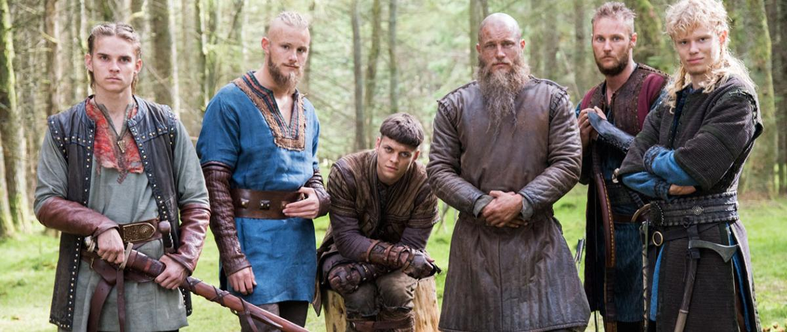

Vikingo (del nórdico antiguo víkingr) es el principal nombre dado a los guerreros germánicos que realizaban incursiones de saqueos, provenientes de los pueblos nórdicos originarios de Escandinavia, famosos por ser grandes navegantes y por llevar a cabo pillajes y ataques en Europa. Dependiendo del contexto y de la interpretación del autor, puede usarse el nombre para referirse a los incursores de esta procedencia o a sus países de origen. La metonimia ha llevado a que el nombre se siga usando aún hoy en día de forma coloquial para referirse a los países escandinavos. Su lengua era el nórdico antiguo. Si bien existen referencias vagas a pueblos germánicos del mar Báltico y Escandinavia en las fuentes romanas, sus ataques y su aparición en la escena política europea cobran relevancia con el saqueo del monasterio de Lindisfarne (793) en el norte de Gran Bretaña, al que pronto siguieron ataques a otros monasterios. Los anales y crónicas de los dos siglos siguientes están repletos de relatos aterradores. Su actuar violento aterrorizó a las antiguas comunidades, que, aunque acostumbradas a la guerra, no tenían forma de prever cuándo habría una incursión y sufrían una carencia de poderes fuertes en los comienzos de la Edad Media. Estos ataques sumados a los de los húngaros y ávaros, a la presión de pueblos eslavos en Europa Oriental y a la de los árabes en el Sur fueron tanto causa como consecuencia de un período de inestabilidad que favoreció la descentralización política del feudalismo. Durante los siglos siguientes, los vikingos y sus descendientes tuvieron gran influencia en la historia europea. En las islas británicas gobernaron durante muchos años hasta ser finalmente derrotados por los normandos, descendientes de vikingos que habían recibido tierras en Normandía (Francia). En Italia fundaron el reino normando de Sicilia e incluso llegaron a influir con sus incursiones en el Califato de Córdoba y en el Imperio bizantino. A través de los ríos del norte intervinieron repetidas veces en el mar Báltico y en Rusia, cuyos primeros estados (la Rus de Kiev) aparecen vinculados a aventureros vikingos.Se suele datar el final del periodo vikingo con la caída del rey Harald el Despiadado, que murió en la batalla del puente Stamford en el año 1066 cuando intentaba tomar posesión del territorio de Inglaterra; aunque los historiadores daneses amplían hasta 1085 con el final del reinado de Canuto IV de Dinamarca.